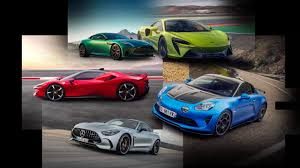
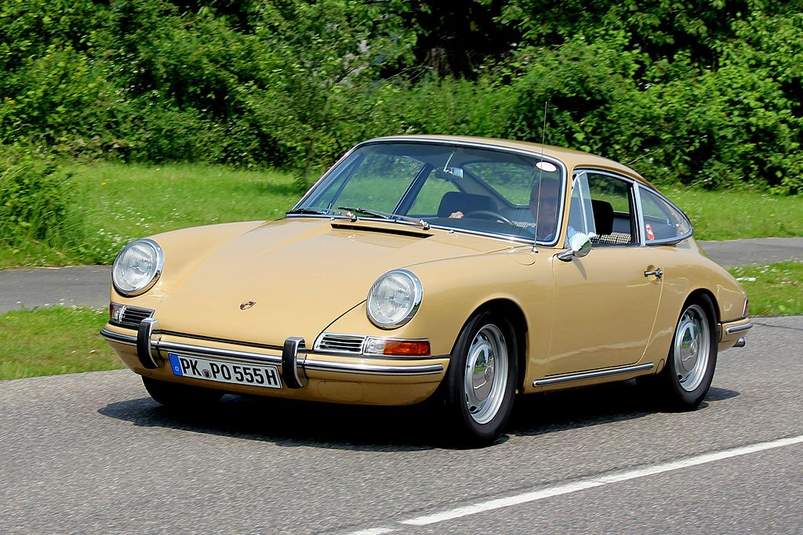
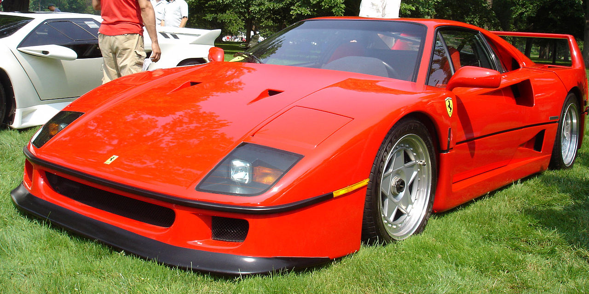
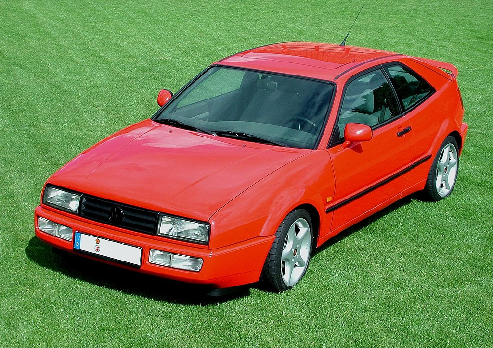
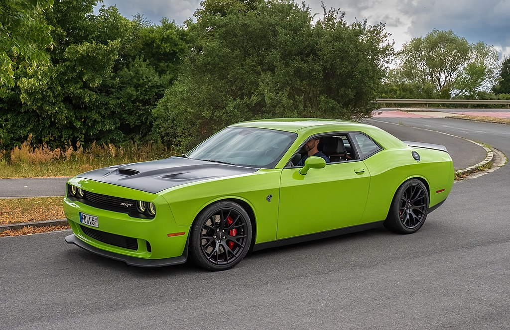

| Datos |
Generacion | Pasion sobre ruedas |
Evolucion |
Tipos Autos |
Historia |
carros clasicos |
Arte |
Carros |
Videos |
Formulario | Coches deportivos |
Originalmente se basó en la plataforma del Ford Falcon de segunda generación, un automóvil compacto. El Mustang original de dos plazas de 1962 había evolucionado hasta convertirse en el "concept car" de cuatro plazas Mustang II de 1963 que Ford utilizó para probar como el público se interesaría en el primer Mustang de producción. El concept car Mustang II de 1963 fue diseñado con una variación de los extremos delantero y trasero del modelo de producción con un techo que era 2,7 pulgadas (6,9 cm) más corto. Introducido temprano el 17 de abril de 1964, 16 días después que el Plymouth Barracuda y, por lo tanto, denominado como un "1964½" por los aficionados, pero el modelo 1965 fue el lanzamiento más exitoso del fabricante desde el modelo Ford A. el Mustang ha sufrido varias transformaciones a su sexta generación actual, siendo la tercera saga de Ford más antigua. Comenzó su producción cinco meses antes del inicio normal del año de producción de 1965. Las primeras versiones de producción a menudo se denominaban modelos de 1964½, pero todos los Mustangs fueron anunciados codificados por VIN y titulados por Ford como modelos de 1965, aunque las actualizaciones menores de diseño en agosto de 1964 al comienzo formal del año de producción de 1965, contribuyeron al seguimiento de la producción de 1964½ datos por separado de los datos de 1965. Con la producción comenzando en Dearborn, Míchigan el 9 de marzo de 1964, el nuevo automóvil fue presentado al público el 17 de abril de 1964 en la Feria Mundial de Nueva York.
En los inicios del siglo XX, los automóviles Daimler construidos en Untertürkheim, distrito de Stuttgart, fueron conducidos de forma exitosa por un distribuidor de Austria llamado Emil Jellinek, que anotaba los automóviles bajo el nombre de su hija: Mercedes. Luego de sugerir ciertas modificaciones de diseño, Jellinek prometió a la compañía comprar una gran producción de sus vehículos bajo la condición de tener la garantía de ser el distribuidor exclusivo de Daimler para Austria-Hungría, Bélgica y Estados Unidos y de que podría vender el nuevo modelo bajo el nombre de "Mercedes". El cambio de nombre fue muy útil para prevenir problemas legales, ya que Daimler había vendido derechos exclusivos de uso del nombre y los planos técnicos a compañías en el exterior, por lo cual han sido y son construidos coches de lujo en Inglaterra bajo la marca Daimler. Un incendio que destruyó la antigua fábrica de pianos Steinway & Sons en Nueva York, que había sido modernizada para producir coches Mercedes, terminó temprano con el sueño de construir Mercedes en los Estados Unidos. Gottlieb Daimler nace el 18 de marzo de 1834 y 1835 en Schorndorf (Baden-Wurtemberg). Tras un aprendizaje como armero, estudia ingeniería mecánica en la Escuela Politécnica de Stuttgart. A finales de 1863 es nombrado inspector de talleres de una fábrica de maquinaria de Reutlingen. Allí coincide en 1865 con Wilhelm Maybach. En 1872 lo nombran director técnico de la Gasmotorenfabrik de Deutz, donde conoce los motores Otto con ciclo de cuatro tiempos. En 1882 abandona la empresa e instala en el invernadero de su villa de Bad Cannstatt un taller. En 1884 logra junto con Maybach construir un motor de combustión interna de bajo peso y dimensiones compactas, conocido hoy en día como «reloj de pie». De ese modo, sienta la base para la incorporación en un vehículo.

Desde la fundación de Porsche, la empresa solamente fabricaba el modelo Porsche 356 al que posteriormente reemplazó. Aunque fuese un coche notable, lo cierto era que el modelo basado en el proyecto del Volkswagen Tipo 1, comenzaba a demostrar señales de cansancio alrededor del final de los años 1950. Así, en este período y al mismo tiempo que invertía en las futuras líneas 356 B y C, Porsche comenzó el desarrollo de un modelo íntegramente nuevo. Fuera de Europa, el 356 consiguió ganar dentro de su categoría la Carrera Panamericana en 1952 y 1953, que se trataba de una competición tipo rally a través de la República Mexicana, por lo que las victorias en esta carrera fueron el origen de la denominación "Carrera" utilizado para los 356 y 911.[5] Por tratarse de una empresa pequeña en la época, Porsche llevó bien en serio el desarrollo del sucesor de su principal y única línea de automóviles, sabiendo que un fracaso podría poner en dificultades a la empresa. Así, entre 1959 y 1961 varios modelos fueron producidos. El modelo 695 T-7 de 1961, se mostró el más prometedor de ellos, producto de los esfuerzos de Ferdinand Alexander Porsche ("Butzi") y Erwin Komenda. Incluso se cuenta que la elección de la fábrica de carrocerías Reutter fue, principalmente, para evitar conflictos entre Butzi y Komenda. Inicialmente planeado como una línea adicional, por poco no fue direccionado al nicho del mercado ocupado por los sedanes Mercedes-Benz. Con una batalla 100 mm (3,9 pulgadas) más larga que los del 356, el 695 era prácticamente un cuatro plazas, con un motor plano de seis cilindros, la misma estructura del 356 y la carrocería básica de lo que vendría a ser el 911. Sin embargo con la parte trasera muy diferente, ya que el coche era básicamente un sedán, quedándose entre la configuración 2+2 y cuatro plazas. Los motores probados fueron los del 356 Carrera 2 (Type 587/1) y el más complejo Type 745, un seis cilindros de 1991 cm³ (2 litros), un poco diferente del motor del 901 desarrollado posteriormente.

El Ferrari F40 fue un modelo desarrollado para su uso en carretera abierta, pero con especificaciones cercanas a un automóvil de competición. Su austeridad, el nivel de exigencia que imprime a sus pilotos y su excelente comportamiento dan prueba de ello. Enzo Ferrari ya era consciente de que se acercaba el fin de su vida, a los 90 años. Estaba enfadado, porque el dominio de Ferrari en las competiciones del motor en todo el mundo había desfallecido con el paso de los años. Él mismo pidió a la empresa el desarrollo de un automóvil que hiciera saber a todo el mundo la capacidad que tenían en Maranello para hacer coches competitivos; y para rivalizar contra el Porsche 959 y convertirse en el orgullo de la marca. El desarrollo técnico corrió a cargo de Nicola Materazzi y aunque su chasis sigue siendo el clásico tubular de acero, fue el primer Ferrari que añadió refuerzos de materiales compuestos. La carrocería fue diseñada por Leonardo Fioravanti que en ese momento trabajaba para Pininfarina. Fue realizada con kevlar, fibra de carbono, aluminio y nomex para conseguir resistencia y poco peso. Gracias al túnel del viento de la compañía italiana, se consiguió una gran estabilidad en ambos trenes a alta velocidad. A pesar de disponer de un gran alerón trasero y no tener los bajos carenados, el F40 consiguió un Cx de 0.34 en penetración aerodinámica. Su cristal trasero que deja ver su motor y con branquias para la ventilación, es una de las señas de identidad que han continuado en la estirpe de deportivos Ferrari.

En un principio, se estuvieron desarrollando bajo la misma plataforma del Scirocco II, pero finalmente se decidió realizarle unas modificaciones, debido a que en 1984 se decidió que el Scirocco Mk2 continuaría en el mercado conviviendo con el nuevo modelo, cuya fecha de lanzamiento debía estar listo antes de 1989. Esto dio origen a introducir al Corrado no como una siguiente generación del Scirocco, sino complementando a este como uno más lujoso en lugar de ser el sucesor directo, ya que ambos estarían en producción durante cuatro años en algunos mercados, principalmente en países europeos. Después del lanzamiento del Corrado desde el enfoque de mercadotecnia para aquellos países donde no continuó el Scirocco II, sí fue realmente considerado como su sucesor.

Los fundadores de la marca, los hermanos Dodge: John, nacido el 25 de octubre de 1864 y Horace, nacido el 17 de mayo de 1868, ambos en la ciudad de Niles (Míchigan), Estados Unidos. Desde pequeños aprendieron el oficio de mecánico de su padre, especialista en motores de combustión interna para el uso de la marina. Cabe destacar que todos los vehículos comerciales fabricados por la Dodge Brothers Company, hasta la fecha en que fue adquirida por Chrysler Corporation, estaban basados en los autos, utilizando un motor de cuatro cilindros en línea. Solamente en 1928 se introdujo el primer motor de seis cilindros en línea. El primer modelo de esta nueva era fue el Dodge "Senior Six Sport Roadster" de 1929. Desde entonces, sus productos han sido una verdadera leyenda en la historia automotriz mundial. Entre ellos destacan la Dodge Pick-Up de 1934; Dodge Humpback Panel Delivery truck de 1937; Dodge Hayes-bodied coupé de 1939; Dodge Command Car de 1941; Dodge Power Wagon de 1946; Dodge Pilothouse Pick-Up de 1949; Dodge Wayfarer Roadster también de 1949; Dodge Customer Royal de 1959; Dodge Club Cab pick-up de 1964; Dodge Daytona de 1969; Dodge Challenger de 1970; Dodge Dart de 1975 y Dodge Shelby Charger de 1986. En la década de 1960, Dodge se prepara para entrar en la categoría de los "muscle cars" y en 1966 debuta con el Dodge Charger, otro coupé deportivo con un poderoso motor Hemi de 426 pulgadas cúbicas (7 litros) con 425 HP (431 CV; 317 kW), capaz de superar los 200 km/h (124 mph). Es precisamente este exitoso modelo de alta potencia el que representa la pasión de Dodge, aunque el primer coche que lleva el nombre de Challenger fue la introducción de una edición limitada del Dodge Coronet Challenger en 1958-1959. 1969: El comienzo de la leyenda Llegó al mercado en el otoño de 1969, como un modelo 1970. Si bien fue uno de los muscle cars en aparecer al final de la escena, su conocido perfil y poderoso motor lo colocaron al frente de la competencia. Se vendía con opción de techo duro o convertible y destacó por la gran variedad de motorizaciones con las que se encontraba. Entre las nueve opciones a elegir estaban desde un motor de 145 HP (147 CV; 108 kW) hasta un V8 Hemi de 425 HP (431 CV; 317 kW).[3] Sin embargo, el Plymouth Barracuda de los años 1968 y 1969 no estaba a la altura de sus competidores, así que se decidió lanzar un modelo totalmente nuevo: el Challenger, ofrecido en la marca Dodge, cuya denominación significa "retador" o "contendor" en inglés, mostraba claramente que este auto buscaba competir directamente con el Ford Mustang y el Chevrolet Camaro. Las ventas de estos dos modelos fueron muy altas en 1969, con 299.824 unidades y 243.085 unidades, respectivamente, por lo que las perspectivas del Challenger parecían muy prometedoras.[4]
